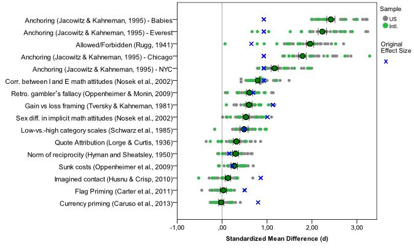
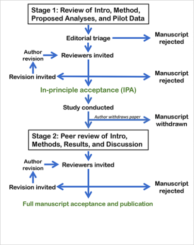
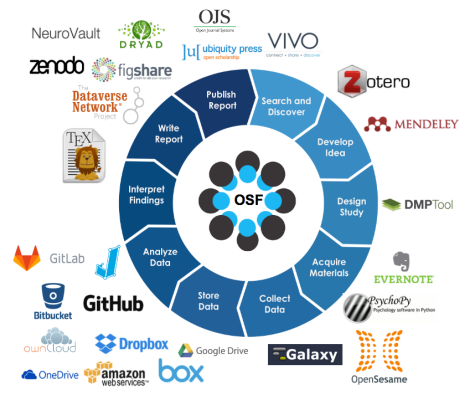

An introduction to digital open
research in clinical psychology
Matthias Weiler
21.02.2018
What we did last week…
We talked about the scientific
process by looking at the
hypothetico-deductive model
Then we talked about how
to make it more open
And finally we talked
about potential problems
related to open science
Any questions or anything to add?
Last week’s homework
Who of you received an email with
a link to the course materials?
If not, write me:
m.weiler@fu-berlin.de
Who of you got an account at the OSF?
If not, please do so at
https://osf.io
Preview: The research projects
Planning
- Choose from a list of online
experiments and surveys - Prepare introduction, method
section and proposed analysis
Presentation
- Present your project to the others
- Short talk (5 mins + questions)
- Select the four “best” projects
Research
- Conduct your study in groups of three
- Add results and discussion
Final presentation
- Present your results to the others
- Talk or poster session
Any questions?
Today:
Digital open scientist’s toolbox - Part I
What makes a tool “open”?
Please take 5 minutes to discuss
your thoughts with two people
sitting next to you
What do you think?
- accessability
- transparence
- reproducability
Follow up: Mass collaboration
Many labs replication project
- 36-sites
- 12-countries
- 6,344-subjects
- 10 out of 13 effects replicated
MLRP

Source: https://osf.io/wx7ck/
Psychological Science Accelerator
Transparent processes
Preregistration
Eight questions to preregistration at:
What’s the main question being
asked or hypothesis being tested
in this study?
Describe the key dependent
variable(s) specifying how
they will be measured.
How many and which conditions
will participants be assigned to?
Specify exactly which analyses
you will conduct to examine the
main question/hypothesis.
Any secondary analyses?
How many observations will be
collected or what will determine
sample size?
No need to justify decision, but
be precise about exactly how the
number will be determined.
Anything else you would like to pre-register?
(e.g., data exclusions, variables collected
for exploratory purposes, unusual analyses planned?)
Have any data been collected
for this study already?
Registered reports
Registered reports

Source: https://cos.io/rr/
Registered reports

Source: https://cos.io/rr/
Online tools
The Open Science Framework
The Open Science Framework

Source: https://cos.io/our-products/osf/
Zotero
Sci-hub
The Experiment Factory
Github
Google docs
to be continued …
Any more questions?
Next week’s preview
“Scientific pitfalls and how to avoid them”
On Thursday at 2:00 p.m.
Homework
Please take a look at the
experiments and surveys at
The Experiment Factory